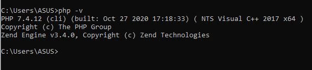
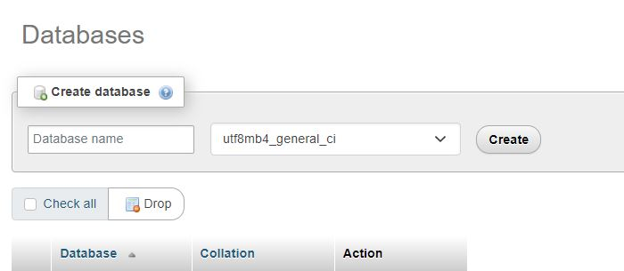
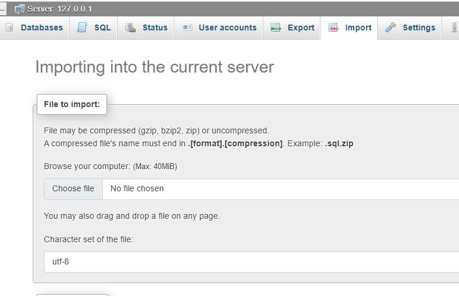
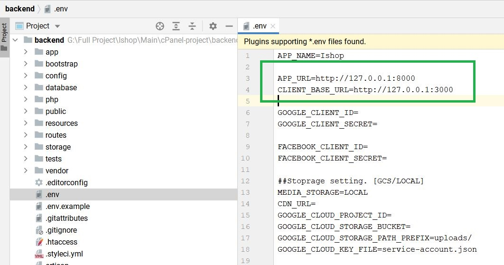
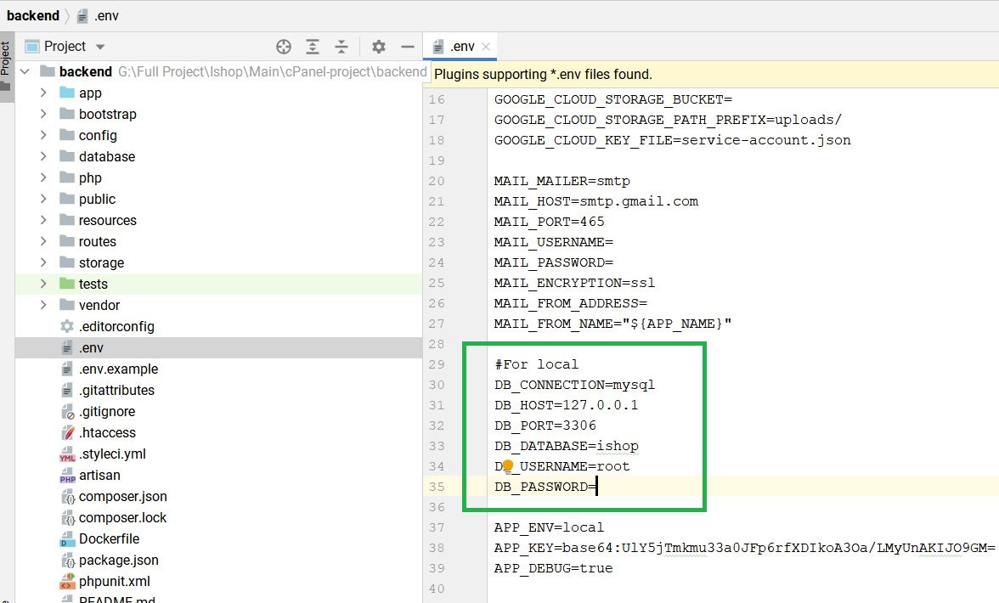
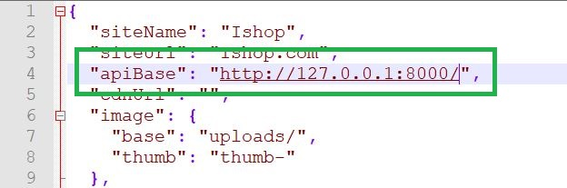

How to run cPanel project locally?
If you don't want to run the cPanel project locally, you can skip this section.
Installing PHP in windows
- Download the latest version of PHP from the official website ( https://windows.php.net/download/ ). Make sure to select the VC15 x64 Non Thread Safe version if you're using a 64-bit version of Windows.
- Extract the contents of the ZIP file to a directory on your system, such as "C:\php".
- Open the "Environment Variables" dialog in Windows by opening the Start menu, typing "Environment Variables" and clicking on the "Edit the system environment variables" option.
- In the System Properties window, click on the "Environment Variables" button.
- Scroll down to the "System Variables" section and find the "Path" variable. Click on it and then click on the "Edit" button.
- Add the path to your PHP installation to the "Path" variable, such as "C:\php".
- Open the command prompt and type "php -v" to verify that PHP is installed and working correctly. 
Installing PHP in Mac
- Open Terminal and type the following command to check if PHP is already installed on your Mac:
- If PHP is already installed, you will see its version number. If it is not installed, you can proceed with the following steps.
- Use Homebrew to install PHP:
- Verify that PHP is installed by running the following command:
php -v
brew install php
php -v
Installing PHP in linux
- Open a terminal and use the package manager for your Linux distribution to install PHP. The exact command will depend on the distribution you are using.
- Here are a few examples:
For Ubuntu and Debian-based systems:
sudo apt-get install phpFor CentOS and Fedora-based systems:
sudo yum install php Verify that PHP is installed by running the following command:
php -v
Database
- Start the XAMPP control panel and make sure that Apache and MySQL are running.
- Open a web browser and navigate to http://localhost/phpmyadmin/. This will take you to the PHPMyAdmin interface.
- In the PHPMyAdmin interface, click on the "Databases" tab.
- In the "Create database" section, enter a name for your database and select the appropriate character set and collation. Then, click on the "Create" button. 
- Your new database should now appear in the left-side column of the PHPMyAdmin interface. Click on the name of the database to access its structure.
- To import a database, click on the "Import" tab in the top navigation menu.
- In the "File to import" section, click on the "Choose File" button and select the SQL file you want to import.
- If the file is compressed, select the appropriate compression format from the "Format" dropdown menu.
- In the "Character set of the file" section, select the appropriate character set.
- Finally, click on the "Go" button to start the import process. 
- Once the import process is complete, you should see a message indicating that the import was successful. You can now access and work with your imported database in PHPMyAdmin.
Note: These steps are intended as a general guide and may vary slightly depending on the version of XAMPP that you are using. If you run into any difficulties, you may want to consult the XAMPP or PHPMyAdmin documentation
Configure Backend/Admin panel
- Navigate to the root directory of cPanel-project folder.
- Go to backend folder
- Open .env in a text editor
- Change the value of APP_URL to APP_URL=http://127.0.0.1:8000
- Change the value of CLIENT_BASE_URL to CLIENT_BASE_URL=http://127.0.0.1:3000 
- Change the value of DB_DATABASE. Put here the name the database you created from the last step. 
Run Backend/Admin panel
- Navigate to the root directory of cPanel-project > backend folder using the terminal.
- Run the following command to start the built-in PHP web server:
- This will start the web server and make your application accessible at http://localhost:8000. You should see a message in the terminal indicating that the server is running, and you can access your application by visiting http://localhost:8000 in a web browser.
- If you want to run the server on a different port, you can specify the port number after the serve command:
php artisan serve
php artisan serve --port=8080
This will start the web server and make your application accessible at http://localhost:8080.
Clearing cache
Now it's time to clear the cache of the backend.
- Open http://127.0.0.1:8000/api/clear-cache in the browser. Cache has been cleared.
- You can browse the admin panel now from http://127.0.0.1:8000.
- Use these credentials below to login to the admin panel
- Admin email: admin@mail.com
- Admin password: 123456
We've attached a video here. You can check that out.
Configure Frontend/Website
- Navigate to the root directory of cPanel-project folder.
- Go to frontend folder
- Open config.json file in a text editor.
- Change the value of apiBase. Put here the url of the backend from last step. eg. http://127.0.0.1:8000/ 
Run Frontend/Website
- Navigate to the root directory of cPanel-project > frontend folder using the terminal.
- Run the following command to install all the packages:
- Run the following command to start the web server in development mode:
- You can browser the website now. Website will be run in 3001 port. Browse the website in http://localhost:3001/.
npm i
npm run dev
We've attached a video here. You can check that out.